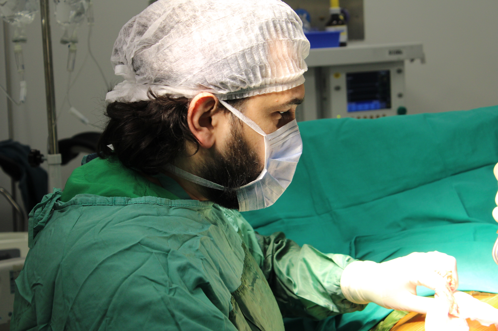

Burun Estetiği
Yüz harmoninizi tamamlayacak, doğal ve estetik burun şekillendirme operasyonları.

Operasyon Hakkında
Rinoplasti (burun estetiği), burunun hem estetik hem de fonksiyonel açıdan yeniden şekillendirildiği cerrahi bir operasyondur. Op. Dr. Turab İsmayilov, yüz anatomisini bütüncül değerlendirerek her hastaya özgü doğal sonuçlar elde etmektedir.
Açık veya kapalı teknikle uygulanan rinoplasti operasyonlarında, hastanın yüz yapısıyla uyumlu, doğal görünümlü sonuçlar önceliklendirilir. Aynı zamanda solunum sorunları varsa septoplasti ile birlikte uygulanabilir.
Ücretsiz Değerlendirme
Uzman ekibimiz, size en uygun tedavi planını belirlemek için yanınızda.